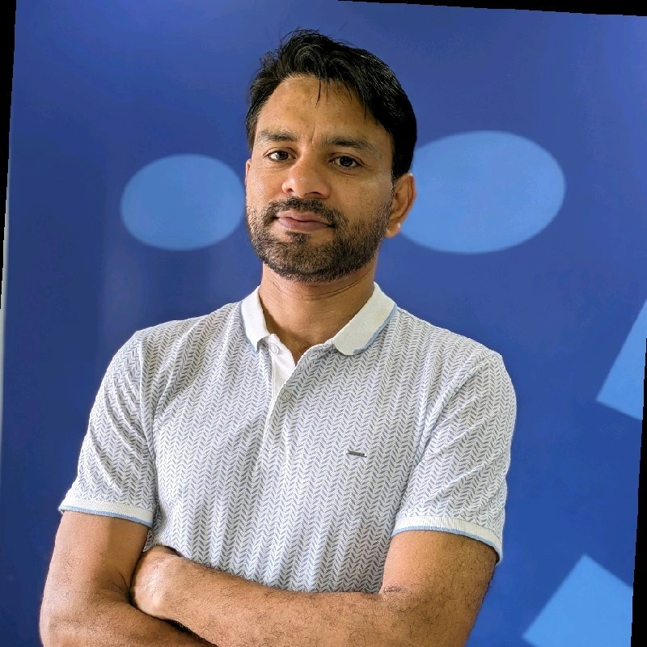

MS, Software Management
Carnegie Mellon University · Mountain View, CA
- Graduating Dec 2027, with a full semester remaining after a Summer 2027 internship window (May to Aug).
Product Manager with 3 years shipping B2B and consumer products across 6M+ business users and 120M+ jobseekers. Now pursuing an MS in Software Management at Carnegie Mellon, graduating Dec 2027 and open to a Summer 2027 internship.
I had the opportunity to work closely with Sumeet, and he quickly established himself as an exceptional product manager. From early on, he demonstrated a strong ability to navigate both team dynamics and technical complexity, particularly in our mobile space, which is one of the most challenging areas of the portfolio. He consistently kept work moving forward, even in the face of ambiguity. What stands out most is his ability to translate customer insight into clear, actionable strategy well beyond what you would expect at his tenure level. He is also an excellent communicator — his updates are proactive, concise, and easy to understand. I would highly recommend Sumeet to any organization looking for a product manager who can operate with both strategic depth and strong execution.
View on LinkedInI've worked alongside Sumeet as a Product Manager at ShareFile for over a year. He is an outstanding colleague and a natural team player who consistently elevates the entire product organization. He drives the strategy and execution for ShareFile's first-party applications across Windows, Mac, Android, and iOS, guiding net-new functionality from early discovery through delivery. He partnered directly with the Identity team to transition the first-party apps to modernized authentication flows, managing strict dependencies and aligning multiple stakeholders. Sumeet balances strong technical acumen with a deeply collaborative mindset. Any product organization would be incredibly lucky to have him.
View on LinkedIn
Nitin Kumar Director of Product Management, Progress ShareFileI had the pleasure of working closely with Sumeet at ShareFile, where he consistently demonstrated the qualities of a high-impact Product Manager. Sumeet is a quick learner who combines strong ownership, accountability, and curiosity with a relentless drive to deliver results. He played a key role in the successful launch of the ShareFile Client Mobile App — one of the most impactful initiatives for the business. Beyond his individual contributions, he is an outstanding team player who is always willing to step in and do what is best for the team and our customers. I strongly recommend Sumeet.
View on LinkedInI remember fast-tracking Sumeet's hiring process immediately after interviewing him — his first-principles thinking was that impressive. He had a rare ability to look at problems without being constrained by how things had traditionally been done. Once he understood the objective, he required very little guidance and took complete ownership. Sumeet was also among the early few who genuinely thought AI-first — he did not use AI because it was the latest trend, but consistently found practical ways to improve the speed, quality, and impact of his work. He brings together independent thinking, ownership, stakeholder management, and an instinct for using emerging technology to create impact.
View on LinkedInI've had the pleasure of working with Sumeet as my Product Manager on the Client Mobile App team at Progress ShareFile. He is someone who always brings clarity, professionalism, and a positive attitude to every challenge. What I admire most is the way he thinks about the product — he doesn't just solve the problem in front of him, he looks at the bigger picture and finds solutions that are practical, scalable, and future-ready. As a designer, I really appreciate how clearly he explains the reasoning behind product decisions. He is not only an exceptional Product Manager but also a great teammate and mentor.
View on LinkedInSumeet — a growth-minded PM, who excels at maintaining a clear, metrics-driven focus, constantly using data to guide decisions and ensure product success. His ability to pivot swiftly based on feedback while staying agile in the process makes him a standout. What sets him apart even further is his genuine commitment to learning and adapting in real-time, always seeking to improve and refine his approach.
View on LinkedInI'm a Product Manager currently pursuing a Master of Science in Software Management at Carnegie Mellon University (Aug 2026 – Dec 2027), after a Computer Engineering degree (GPA 3.86/4.00, 2019–2023) from Sardar Patel Institute of Technology in Mumbai.
Three years of end-to-end ownership across enterprise B2B software and consumer marketplaces. At ShareFile I led strategy and roadmap for 3 mobile & desktop apps (6M+ business users) and spearheaded the 0-to-1 ShareFile for Clients app. Earlier, LLM-based geospatial entity resolution at Naukri (120M+ jobseekers) and role-specific matching at WorkIndia (50M+ users).
Computer engineering background, hands-on with Python and SQL, having shipped LLM-based matching and validation systems to production.
0-to-1 · ShareFile, 2025
Shipped a 0-to-1 mobile app after research showed clients of accounting & legal firms were missing deadlines — reminders buried in inboxes, often with no desktop access. Reached 23% of all client task completions within six months.
2024 · WorkIndia
Winner of the Best Use of Data Analytics in CX for an Online Job Portal.
Winner
Took first place against 2,000+ teams.
Runner-Up · ×2
Runner-up at two separate competitions, each with 3,000+ teams.
Sardar Patel Institute of Technology
Represented 2,500+ students.
Stanford University · 2025
Certification.
Whether it's a product idea, a roadmap riddle, or just chai, my inbox is open across the galaxy.